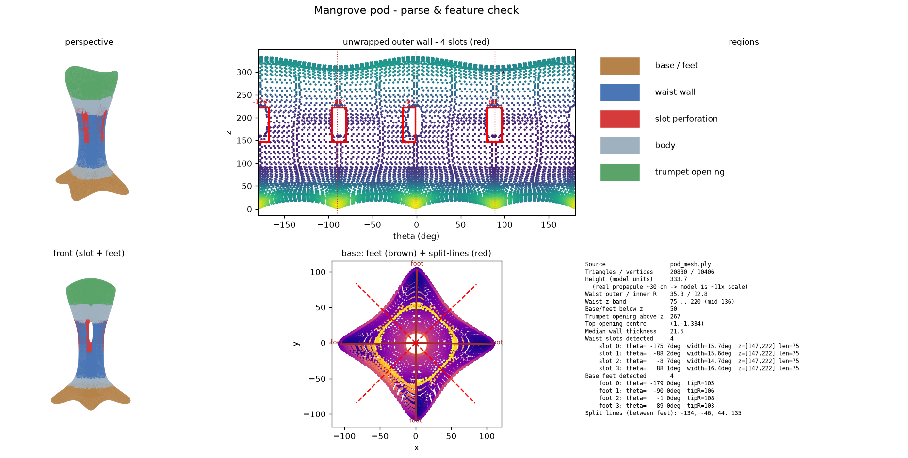
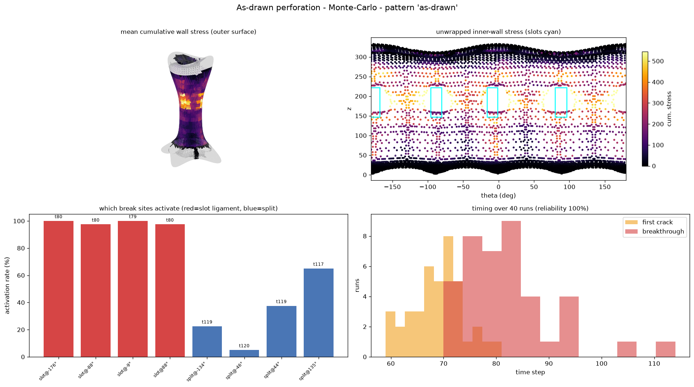
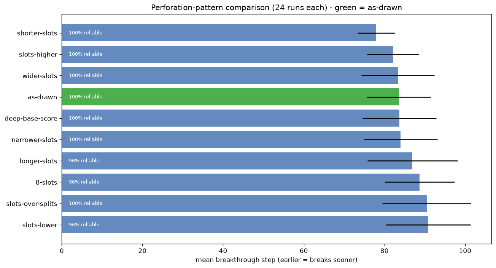
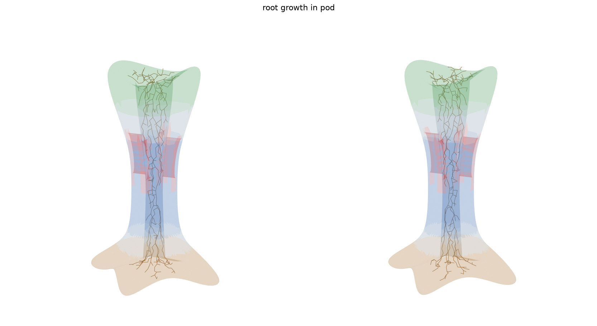

A physics-flavoured simulation on the real 3-D seed-pod geometry: grow the sapling's roots, press them against the pod wall, and predict where and when the pod tears apart at its seams so it reliably breaks away — now with material and species comparison, real-time break estimates, and honestly labelled data provenance.
The .3dm solid is welded into a triangle mesh and its features
auto-detected: the flared trumpet opening, the narrow waist with its four vertical
slots, and the splayed starfish base with four feet. Each slot sits directly above a foot.

Cumulative wall stress from the expanding root system, painted on the real mesh. Brightest = highest stress. Drag to orbit, scroll to zoom. The hotspot wraps the waist — exactly where the slots are.
Open the single-run viewer full-screen ↗ · Open the 40-run mean-stress viewer ↗
A branching root system grows by space-colonization from the top opening, down through the waist and out into the feet.
Roots swell over time; where a root reaches the inner wall it presses outward. Pressure is integrated into a per-face cumulative-stress field.
A slot→foot ligament tears when a crack spans it; the pod "breaks through" once most ligaments have torn.
Many randomized growths give the mean breakthrough time, which site cracks first, and run-to-run consistency.
The pod breaks along the four slot→foot ligaments (red), not the between-feet split-lines (blue) — a symmetric, reliable 4-petal release. Failure is fastest when a slot's tearing ligament overlaps the peak root-pressure band in the upper waist.
slot ligaments — tear in ~100% of runs base splits — weak secondary path



The tool doubles as an industry design explorer: compare real pod materials and propagule species, read break timing in real months, and treat the pod as 4 seam-defined quarter-pieces (rim → slot → foot) with adjustable seam depth/width/offset. Crucially, every constant is labelled by how well-grounded it is — nothing assumed is shown as fact.
Clay · Concrete · Bioplastic, each with strength, stiffness, wet/tidal degradation and a biodegradability flag. Concrete is flagged with a visible warning as the least biodegradable. All values are labelled engineering estimates requiring lab verification.
Rhizophora mangle and Avicennia marina: the step axis maps to real weeks/months, root force ramps up slowly at first (matching early root biology), and salinity modifies growth rate.
Grounded default 0.5–1.0 MPa from general tree-root biomechanics (not mangrove-specific). Calibration Mode lets a measured load-cell force (N) override the estimate.
A permanent panel lists every constant as Literature-sourced, Estimated — needs lab validation, Measured off the model, or Calibrated surrogate, each with its source.
Literature-sourced Calibrated (relative surrogate) Measured off the 3-D model Estimated — needs lab validation
py -m venv .venv .venv\Scripts\python -m pip install -r requirements.txt
start_web.bat):
.venv\Scripts\python webapp\app.pythen open
http://127.0.0.1:5000.Want the live app hosted online too? It can be deployed to any Python host (Render, Railway, Fly.io, PythonAnywhere) — GitHub Pages alone can't run it.